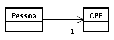

1:1 (unidirecional)
Uma instância de Pessoa está associada, necessariamente, a uma
instância de CPF. Uma instância de CPF, por
outro lado, desconhece a existência da classe Pessoa. Instâncias
de CPF podem, inclusive, serem persistidas independentemente da existência
de instâncias de Pessoa.
